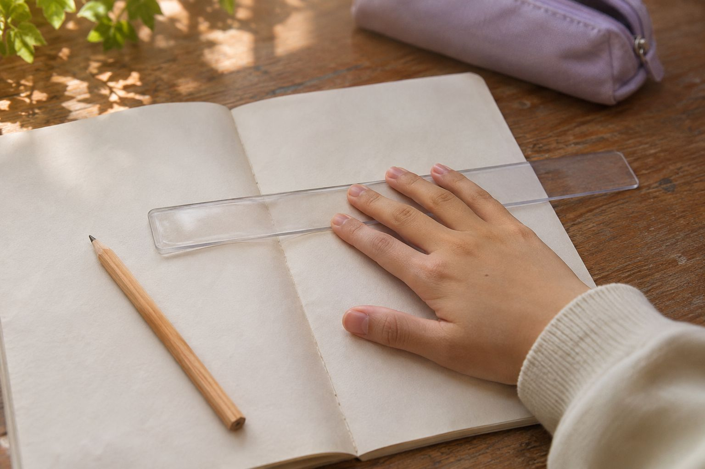

개념 연결반
수와 도형의 기초를 자기 말로 설명하는 연습.
- 월·수 16:00 · 80분
- 그림으로 표현하는 개념
- 생각 과정을 담는 풀이 노트
FIND YOUR NEXT SQUARE
단계별 수업 구성을 살펴보세요. 강좌와 시간표는 모두 체험용 가상 정보입니다.

수와 도형의 기초를 자기 말로 설명하는 연습.
다른 풀이를 비교하며 문제를 보는 눈을 넓힙니다.
낯선 문제를 익숙한 개념과 연결하는 연습.
실제 수강 신청이나 결제는 진행하지 않습니다. 관리 체험에서 학원 소식과 이미지를 바꿔 볼 수 있습니다.